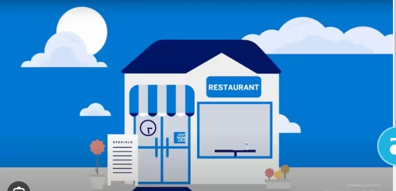
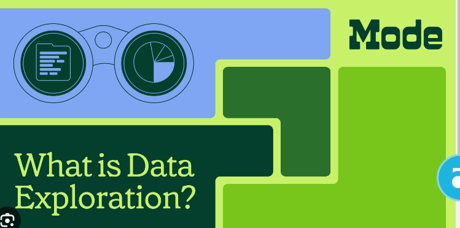
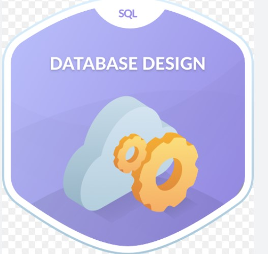

Creating a Python ride-sharing platform with Tkinter GUI. Users can request rides, drivers can accept, and real-time updates are displayed. Utilizes Python's Tkinter for intuitive interface design, connecting users seamlessly for efficient and user-friendly ride-sharing experiences

Leveraging Restaurant Data for KPIs and Revenue Metrics Analysis. Employing robust analytics techniques, I delve into restaurant data to extract key performance indicators and revenue-related insights. My approach provides valuable insights for informed decision-making and optimizing business strategies, ensuring sustainable growth and success.
Employee analytics solution scrutinizes attrition rates, tracking the departure of staff over time. By meticulously examining attrition counts, we identify patterns and trends, uncovering crucial insights into workforce dynamics. Furthermore, we meticulously monitor active employees, evaluating engagement and retention. This holistic approach enables data-driven decisions, fostering a resilient and motivated workforce.

Data exploration in SQL involves querying and analyzing a dataset of a COVID(Globally) to gain insights and understand its structure, patterns, and relationships. SQL provides powerful tools for exploring data through various techniques:
Python-driven data analysis empowers businesses by extracting actionable insights from raw data. Through libraries like Pandas and Matplotlib, Python processes and visualizes information, revealing patterns, trends, and customer behavior. This knowledge drives informed decisions, enhances operational efficiency, tailors marketing strategies, and fosters innovation, ultimately boosting competitiveness and driving sustainable growth.
Data Loading, Click sense exploration

Step by step process of datbase design using SQL and MS SQL server